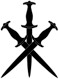

“I like the enthusiasm,” Ernest said to Humphrey, “but we shouldn’t immediately rush to battle. What do you think, Phoebe?”
“Our options are run or fight,” Phoebe said. “Their skimmers may have been faster than ours, but there’s no way a sand barge would catch us.”
“What do you think, Humphrey?” Ernest asked.
“That barge was larger than any vehicle I’ve ever seen,” Humphrey said. “I’ve heard of the nomad tribe barges, and this was everything promised. I’d be willing to bet their whole tribe is onboard.”
“How would you approach fighting it then?” Ernest asked.
“The barge will have their strongest people,” Humphrey said. “We’ll definitely be outnumbered, and we don’t have a healer. On the other hand, this first group may well have been trying to drive us into a waiting ambush. If we run, only to fall into the lap of a larger, stronger team, the sand barge will catch us up when we’re at our greatest disadvantage. If we’re going to fight, it has to be on our terms.”
“Do you think that’s likely?” Ernest asked.
“I didn’t see anyone else from up in the sky,” Humphrey said, “but a shovel and some canvas sheeting can make you almost invisible out here.”
“So what action do you suggest?” Ernest asked.
“Attack the barge,” Humphrey said. “The nomad tribes get by on shock-raids with huge numbers and a reputation for atrocity. They think tactics are for cowards and equipment is for the weak.”
Humphrey bent down and picked up a claw weapon he had taken from one of the prisoners, holding it up.
“They use weapons like this, or even none at all,” he said. “The nomad tribes are fearsome to an isolated community, but every time I’ve heard of them coming up against a trained and equipped group they get torn apart. Including this time. Something made them desperate enough to come south and attack a guarded convoy, but that didn’t change the result.”
Humphrey looked out in the direction the barge was approaching from.
“We take the initiative,” he said. “Put them on the back foot, when they’re used to being on the front foot. We move fast, hit hard and take them apart before they can regroup.”
Ernest gave Humphrey an appraising look.
“You’ve changed, Hump,” he said. “I thought for sure you’d say run.”
Humphrey cast a panicked look at Jason, wincing when Jason’s face lit up like a child just handed an unexpected present.
“Did he just call you Hump?” Jason asked Humphrey.
Humphrey let out a sobbing groan.
“Are we doing what Hump suggested?” Jason asked Ernest. “If we're going to follow Hump's plan the way Hump laid it out, we need to get moving, don't we, Hump?”
“I hate you,” Humphrey said.
“That’s alright, Hump,” Jason said with a consoling slap on the back.
“If you’re quite done?” Ernest asked Jason.
“Don’t worry about me and Hump,” Jason said.
“Please stop saying Hump,” Humphrey begged.
“No worries, Hump. I’ve got your back.”
Ernest looked around the group.
“Staging an attack like this is outside my purview as team leader. I will not order any of you to participate. If anyone has any thoughts, let's hear them.”
Jason smiled to himself. He could see Ernest had already made up his mind and was just creating a teaching moment.
“Do we even have time to stand around discussing this?” Gabrielle asked.
“Humphrey?” Ernest asked.
“With the speed it was moving,” Humphrey said, “we have five to ten minutes before the barge gets here.”
“Do we even know they’re with these people?” Mose asked. “It sounds like that barge is far away.”
“We weren’t making a straight line back to the city,” Ernest said. “That’s specifically to avoid interception. They needed fast skimmers to catch us, but they couldn’t handle the weight of the coins. The most likely scenario is that the faster skimmers moved to intercept us, with the slower barge following to pick up the loot.”
“That leaves the question of whether we move towards it or away,” Humphrey said.
“Anyone?” Ernest asked. His gaze went over the group, who looked largely uncertain. When no one spoke up, Ernest looked to Jason, who was standing around with a casual lack of concern. He was also older than the other team members, even Ernest himself.
“Mr Asano,” Ernest said. “What is your assessment?”
“The instinctive reaction might be to neutralise the threat,” Jason said, “but that isn’t the job. We’re not out here to catch pirates or wipe out bandit clans. That’ll be the job they send the next group on. We’re here to escort the coins. Attacking an unknown force with unknown capabilities significantly impacts the likelihood of the actual mission going wrong. I say we just get on the skimmers and go.”
“And if they have an intercepting force?” Ernest asked.
“Then we handle it,” Jason said.
“We did handle this lot quickly enough,” Phoebe said. “We’d most likely handle the next before the barge caught up. I vote we stay on task.”
“Same here,” Mose said. “That barge isn’t an immediate threat to anyone but us.”
“That's true,” Humphrey acknowledged. “The only things out here are the spirit coin farms. Even if there's a whole clan of nomads on that barge, there's no way they'd get past the walls.”
Ernest looked around the group again.
“Alright,” he said. “Humphrey, I love that you’re thinking more actively, but you also have to know when to temper that drive. Everyone back on the skimmers; we’re heading for the city.”
“What about the prisoners?” Jason asked.
“They’re your prisoners, Humphrey,” Ernest said. “Your decision.”
“Leave them here,” Humphrey said. “Let their friends come for them.”

* * *
The potential interdicting force never appeared and the skimmers reached a relay station at the edge of the delta without further incident. The coins were loaded from the skimmers to heavy, armoured carriages. These were the kind driven by magic rather than drawn by animals. Clive Standish was on hand as the Magic Society representative to inspect the coin boxes for tampering and check the carriages.
With him was a team of guards belonging to the Duke of Greenstone. Most essence users in Greenstone were a part of the Adventure Society, but the largest group in Greenstone who weren’t was the Duke of Greenstone's household guard. They would be escorting the carriages through the delta roads to the city, where the coins would be stored in city-controlled warehouses for distribution and export.
The spirit coin trade was the largest source of income in Greenstone, with many of the major local powers involved. The Geller and Mercer families produced the coins, the Adventure Society brought them in from the wilderness. The Duke of Greenstone saw to their dispensation, managed by the Magic Society.
“G’day Clive,” Jason said, approaching the Magic Society official.
“Good afternoon,” Clive greeted, not turning away from his work. He was bent down checking the underside of a carriage.
“What are you doing?” Jason asked.
“There was an incident several years ago where the carriages were tampered with,” Clive said. “Some rather sophisticated artifice was used to suborn the magic that drives them. The drivers lost control and the carriages drove themselves away.”
“That’s kind of awesome,” Jason said.
“I know, right?” Clive said, glancing up with a grin. “The perpetrator was never caught, which is a shame; I’d love to discuss how they did it. That was before my time, though.”
“So why bother with all this?” Jason asked. “Why not just get someone with a storage power to stow the coins and move them.”
“There have been incidents in the past where the coins that went into the storage weren’t the ones that came out,” Clive said. “It happened enough times in enough coin farms around the world that now everyone uses secure transport crates.”
“That was a long time ago,” Humphrey said. “They changed the system here when my mother was still a girl.”
“Are those skimmer drivers going to be alright to go back?” Jason asked.
“No, they’ll stay until the barge is taken care of, then go back with another escort, just in case. In the meantime, they get some unexpected time at home with their families.”
“Too bad we didn’t have another driver,” Jason said. “We could have salvaged that intact skimmer for some extra coin.”
“The only one not destroyed was full of bodies that looked like they’d been out there for weeks,” Humphrey said. “I wouldn’t make someone drive that thing.”
“Good point. You want to get some juice after this? I’m all out, but Arash said he’d be at the Magic Society campus.”
Humphrey leaned in closer, speaking quietly.
“Actually, I was thinking I could maybe ask Gabrielle,” he said nervously.
Clive and Jason shared a glance and Jason put a hand on Humphrey’s shoulder.
“Good idea,” Jason said. “Go with God, my son.”
Humphrey frowned in confusion.
“Which god? Do you mean the god of fertility? The one with all the provocative murals? I'm not looking to take things that far.”
“Wait, what god is this?” Jason asked. “Should I be checking out these murals?”
* * *
Jason wandered into Rufus, Farrah and Gary’s suite, crashing down on a comfortable sofa. Farrah was at the dining table, which had a half-dozen open books on it. She was scribbling in a notebook, occasionally looking up to read a passage or turn a page. She looked consumed in her work, so he didn’t interrupt.
After a few minutes, Jason heard the sounds of books closing and Farrah joined him in the lounge area, dropping into a plush armchair.
“The furniture they have here is amazing,” she said, luxuriating in the chair. “I wonder where they get it.”
“There’s a craftsman out in the delta,” Jason said. “He uses all local materials.”
“How do you know that?”
“Madam Landry told me,” Jason said.
“The landlady?” Farrah asked. “How do you get along with people so well when you seem bound and determined to annoy them?”
“That’s rich people,” Jason said. “Aristocrats and such. Why would I mess with decent, ordinary people? Madam Landry is a small business owner who works very hard to run a quality establishment. I have nothing but respect for that.”
“But you’re a rich person,” Farrah said.
“And am deserving of challenge, as such,” Jason said. “You know Humphrey took me to task the other day. Once I cooled off, I realised that there was some insight in parts of what he said.”
“Self-awareness after the fact does seem to be a pattern for you,” Farrah said. “I've been on the receiving end of that myself.”
“You were right then, too,” Jason said wearily. “What you said about killing people.”
“Did something happen on your job today?”
“We were attacked,” Jason said. “I killed… I don't know. A dozen people?”
“How are you taking that?”
“Better than I'd like, to be honest. It was easy. I don't mean the fighting, although, that too, but the killing. It should feel harder, shouldn't it?”
“Adventurers have to be ready to act without hesitation. Honing that reflex to kill probably isn’t good for the soul, but it’ll keep you alive.”
“It’s not like I wasn’t warned,” Jason said. “Rufus told me going in there would be a price. When he said that, I thought I could be different. The guy who doesn’t kill. It was breathtakingly naïve. Now, I don’t know what to think. How I feel about it doesn’t match what I think I should feel about it. I killed people, but if I’m being honest with myself… I had fun today.”
“Everyone has to find their own balance,” Farrah said. “For me, it’s about what is deserved. If I kill someone, then they had it coming. I know you didn’t like that we killed those cultists we captured when we cleared out the Vane house, but they definitely had it coming. But that’s my answer. You have to find your own.”
Jason nodded.
“I think…”
He sighed.
“I want my choices to make things better, rather than worse.”
“You want to be responsible for your own actions,” Farrah said. “I can respect that.”
“I think about Thadwick Mercer more than I should.”
“Why in the world would you think about him?”
“I’ve kind of shown him up a couple of times,” Jason said. “He’s just so witless and malevolent that I don’t feel bad about using him. It’s very satisfying. But an entitled guy like that, you make him feel even a little powerless and he’ll take it out on the people he has power over. How many members of the Mercer household staff were raked over the coals because I couldn’t help getting a few jabs in? What did those offsiders of his have to put up with after Thadwick made them refuse a contract?”
“I don’t imagine your intervention was required to get that boy to treat his people badly.”
“But expand that out,” Jason said. “Choices have consequences, and I’m making life and death choices now. How many fathers did I kill today? How many brothers, how many sons?”
Farrah pushed herself out of the chair and sat next to Jason on the couch.
“I think that as long as you keep asking yourself those questions,” she said, “then you’re going to be alright.”
They heard laughter coming from outside the room, and the door opened to let in Rufus and Vincent, the Adventure Society official with the enormous moustache. They were both slightly unsteady, and Rufus had a bottle of wine in hand.
“Jason,” Rufus said with the happiness of drink. “How did the job go?”
“Well enough.”
“That’s good,” Rufus said. He wandered over to the door to the balcony and went outside, Vincent in tow. Both men were normally more formal, so it was easy to spot the easy intimacy in their body language.
“When did that happen?” Jason asked.
“A while ago,” Farrah said. “You’ve been keeping yourself busy.”
“I guess I have,” Jason said.
“Coming to this city has been good for him,” Farrah said. “He’s more relaxed; there aren’t as many eyes on him. It’s hard to do better when everyone is watching your mistakes.”
“Good for him,” Jason said. “You know, I might go call on Cassandra. I could use a night out.”